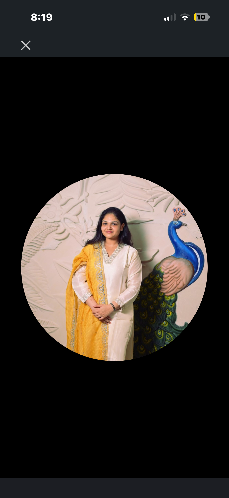

Material notes · 06.24
Interior architecture · Mumbai / India
Nandini Khandelwal creates considered interiors shaped by light, material and the rituals of everyday life.
Nandini Khandelwal designs spaces with a point of view — warm, tactile and deeply personal.
Her work sits at the intersection of architecture and emotion, bringing together urban-scale thinking, detailed 3D visualisation and a hands-on understanding of execution.
More about Nandini ↗ Material study 01 / Limestone & oak
Material study 01 / Limestone & oak
Interior designer · Noida, India
A driven, detail-oriented designer completing a Post Graduate Diploma in Interior Design in 2026.
With a foundation in Urban Planning, Nandini brings a rare macro-to-micro perspective to interiors — balancing spatial thinking, technical craft and the realities of execution. Her practice is grounded in material selection, thoughtful planning and a deep respect for the people who inhabit a space.
Download resume ↓One home, many quiet gestures.

“A well-designed space should feel inevitable — as if it could only have ever been this way.”
Every project begins with a conversation about how you live, gather and rest.
We use proportion, shadow and natural materials to give rooms their own rhythm.
The best spaces become more beautiful with time, acquiring the patina of a life well lived.
Full-service interior design for homes and spaces with a story to tell.
Homes, apartments & villas
↗Flow, proportion & purpose
↗Custom pieces & considered light
↗Stone, timber, textile & colour
↗Material notes · 06.24

Field notes · 05.24
Tell Nandini a little about your project. She’ll be in touch within three working days.
nknandinik10@gmail.com ↗+91 8979933462 ↗WhatsApp ↗Private workspace